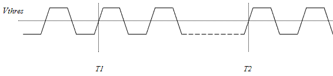
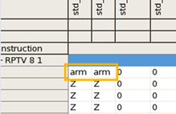
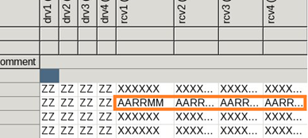

PS1600 TMU (Time Measurement Unit) per pin
For AC parameter testing the card provides a Time Measurement Unit (TMU) per pin, which enables full parallel AC measurement with a minimum test time.
For an overview of all licensed V93000 products by Product ID, as they are referenced on the Entitlement Certificates, see Licensed V93000 products.
The Time Measurement Unit (TMU) per pin allows you to accurately measure frequency, period length, pulse width, rise and fall times, edge times, jitter and propagation delay (skew) of periodic and non-periodic output signals. It requires one or more licenses. See, Overview of the TMU per pin.
The TMU measures the time elapsed between the arming (activation of the TMU) and the occurrence of a certain event. Events are defined by a slope (rising or falling edge) of the DUT signal, and by a voltage threshold. The event occurs at every rising or falling slope of the DUT signal when the voltage threshold is crossed.

For details on defining voltage thresholds for differential signals with Smart Scale cards see Comparing output signals and PS1600 level setup.
Examples
TMU setup example
In single-ended receive mode. the TMU is activated (armed) by the pattern when special waveforms are detected that contain the ARM keyword. The wavetable example below defines receive edge r7 in waveform 2 to generate the arming signal:
WAVETBL "tmu_wavetable" PINS std_o 0 "d1:F00" 0 1 "d1:F10" 1 2 "d1:Z r7:ARM" arm 3 "d1:Z d2:Z" Z brk "" |
 |
This timing set (see excerpt below) specifies the exact time (in device cycle) when the TMU (r7) is to be activated (armed).
EQNSET 1 "tmu_example_eqn" ... TIMINGSET 1 "tmu_example_tim" PINS std_o d1 = ... d2 = ... r7 = 6
In this example, the delay of r7 is set to 6. Executing waveform 2 will activate (arm) the TMU 6 ns after the start of the device cycle.
TMU differential setup
DFPN 10101,"",(drv1) DFPN 10102,"",(rcv1) DFPN 10103,"",(drv2) DFPN 10104,"",(rcv2) DFPN 10105,"",(drv3) DFPN 10106,"",(rcv3) DFPN 10107,"",(drv4) DFPN 10108,"",(rcv4) PSTE 1 CONF I,F160,(drv1) CONF O,F160,(rcv1) CONF I,F160,(drv2) CONF O,F160,(rcv2) CONF I,F160,(drv3) CONF O,F160,(rcv3) CONF I,F160,(drv4) CONF O,F160,(rcv4)
EQNSET 2 "eqn2" LEVELSET 1 "lst1" PINS drv1@diff drv3@diff vil=0.0 vih=1.5 PINS rcv1@diff rcv3@diff term center_tap #vol=svol #voh=svoh vth=0 vt=0.75
In the differential measurement mode, the TMU is activated (armed) by the pattern when special waveforms are detected that contain the ARM keyword. The wavetable example below defines receive edge r7 in waveform 2 to generate the arming signal. The qualifier @diff is added only to the positive pin of the differential pair. The negative pin is omitted because the waveforms for the negative pin will then be created automatically. Note that, the label AARRMM was appended to the end of the waveform 2 to distinguish that the setup is for differential measurement mode:
WAVETBL "wavetable1_diff"
PINS rcv1@diff rcv3@diff
0 "r3:E0 r4:E0 r5:E0 r6:E0" ZZEERR
1 "r1:X r2:X r3:X r4:X r5:X r6:X" XXXXXX
2 "r1:X r2:X r3:X r4:X r5:X r6:X r7:ARM " AARRMM
PINS drv1@diff drv3@diff 0 "d1:F00 d2:F00" ZZ 1 "d1:F10 d2:F10" OO 2 "d1:F00 d2:F10" ZE 3 "d1:F10 d2:F00" ON brk "d1:F00" |
 |
EQNSET 3 "teq3"
SPECS
per [ns]
EQUATIONS
TIMINGSET 1 "tim3"
period = per/2
PINS drv1@diff drv3@diff
period_div = 6
d1 = 0
PINS rcv1@diff rcv3@diff
period_div = 6
r7 = 1.8
- This wavetable cannot be used for window compare or transition tests.
- Neither the activating (arming) receive edge nor its upper neighbor can be used for any compare actions.
License overview
The N5866U license is required to access this feature.
For an overview of all licensed V93000 products by Product ID, as they are referenced on the Entitlement Certificates, see Licensed V93000 products.
Functional changes
- Introduced in SmarTest 7.1.0
- SmarTest 7.3.2: Support of PS1600B